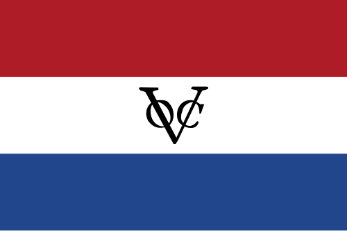
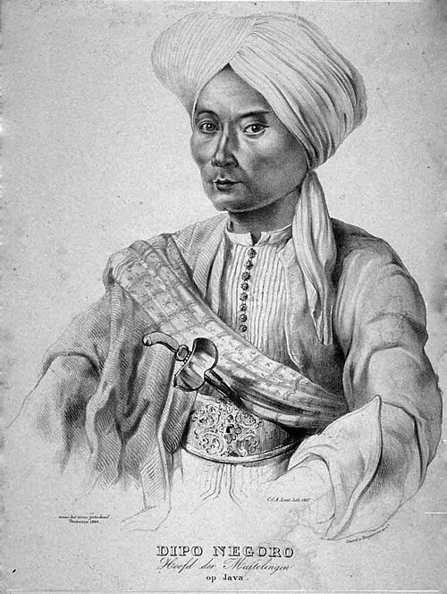
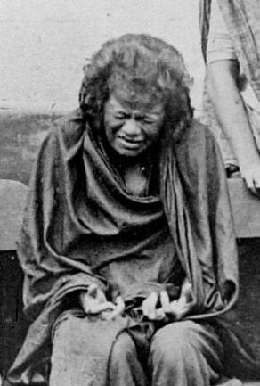
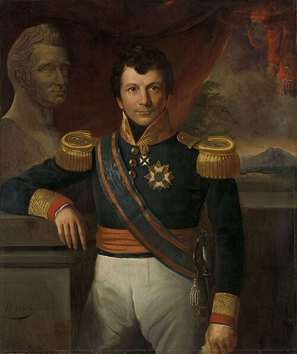
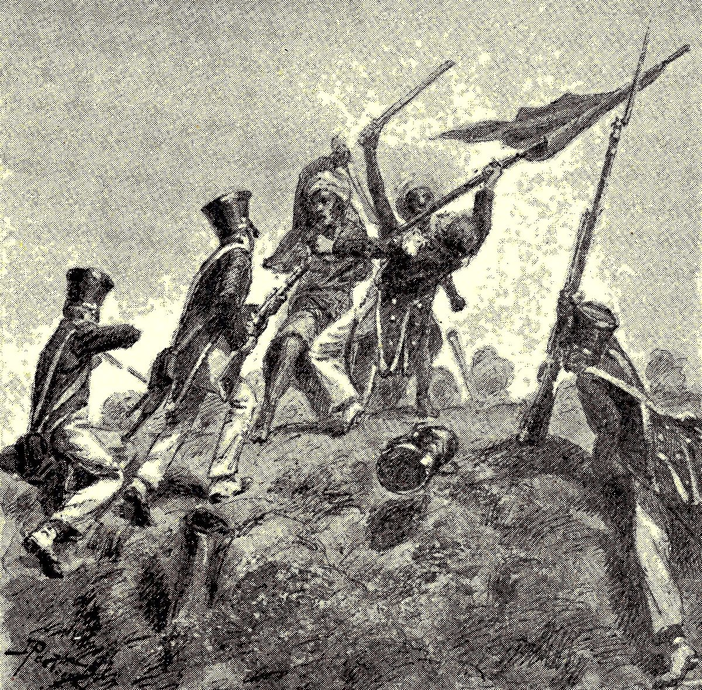
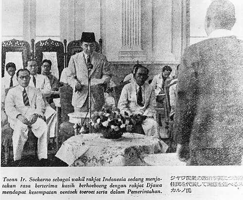
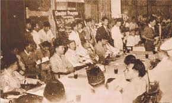

Masa Penjajahan Indonesia
Penemuan:
0/7
Pengetahuan Meningkat!
Baca juga artikel Masa Kemerdekaan
Quiz Penjajahan Indonesia
Memuat pertanyaan...
Pertanyaan Berikutnya
Selesaikan Quiz







Judul Artefak
Baca artikel lebih lanjut
Tutup
Kembali ke Gerbang Silam